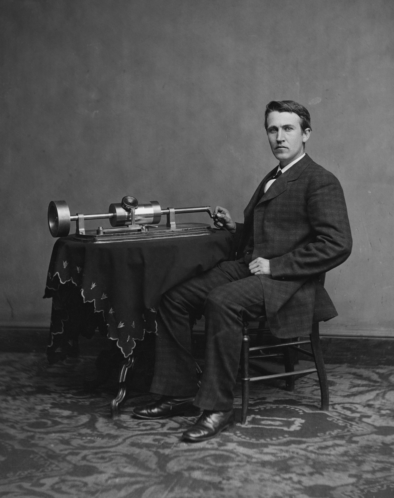
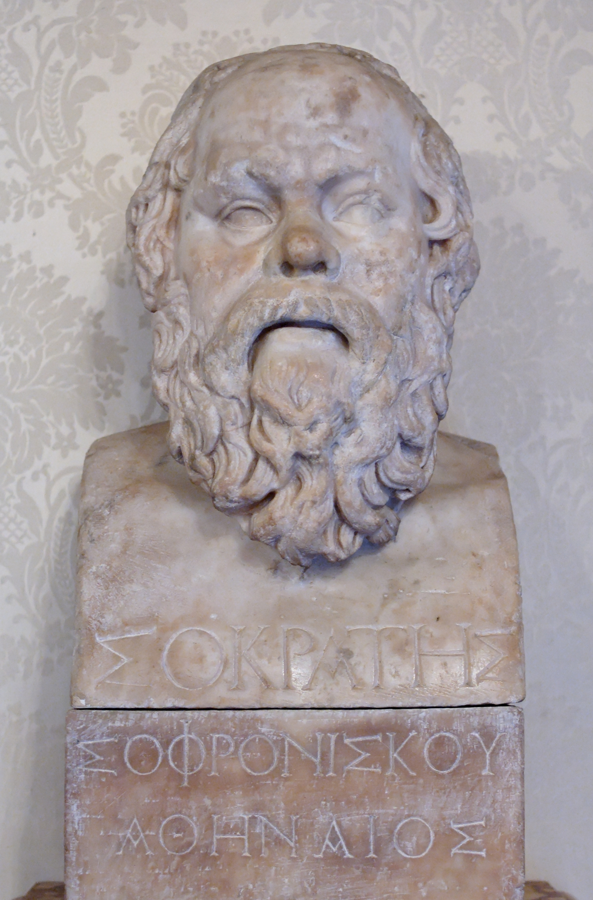

教育热爱秩序，创新热爱混乱——二者的张力贯穿本卷。——本卷卷旨
卷导读：本卷把镜头从"如何预测"转向"如何获益"。塔勒布在卷首即断言，自以为"十分清楚自己将往哪里去"的目的论谬误是最普遍也最脆弱的人类错误；既然未来看不清，就让结构替我们工作。
第 12 章第 13 章第 14 章第 15 章第 16 章第 17 章
第 12 章泰勒斯的甜葡萄（Thales' Sweet Grapes）
本章定位：作为第四卷首章，它用一个两千六百年前的哲学故事，把前三卷的"不对称性"锻造成一件趁手的武器——选择权，并宣告：反脆弱不是天赋，而是可以主动购买、主动搭建的结构。
一、主要思想提炼
- 买选择权，而不是买预测：泰勒斯低价买断橄榄油压榨机的季节租约，丰收则大赚，歉收只损失小额租金。亚里士多德以为他赢在天文学知识，塔勒布纠正：他赢在结构——利用自身缺乏知识的不对称契约。
- 可选择性允许你"不知道"：当损失有底、收益无顶，你无须预测未来，也无须"常对"，只需在有利结果出现时认出它、拿住它。
- 做理性漫游者，不做观光客：漫游者每一步都根据新信息修改行程，不是计划的奴隶；坚信人生路线早已确定，恰恰是脆弱性的来源。
- 试错系统性优于顶层设计：大自然不画蓝图，靠"留住好的、舍弃坏的"的试错过滤器造出最复杂的系统；试错本质上就是一种选择权。
- 最好的选择权往往免费：金融期权明码标价且昂贵，而租房的灵活性、财务独立、多元社交这类"嵌入选择权"常被白白忽略——自由本身就是终极选择权。
二、原文精粹与解读
观点一：盈利来自结构，而非知识
其實泰勒斯是讓自己站在一個位置，能夠利用本身的缺乏知識——這正是不對稱性的秘密特質。關於這種上檔利益對下檔損失的不對稱性，我們想要傳遞的訊息，關鍵在於他不需要了解太多來自星星的訊息。
解读：塔勒布直指亚里士多德读错了故事。对普通人的启示是：与其苦练"预测得更准"，不如先站到"错了不重伤、对了大赚"的位置上。
观点二：不必常对，也能赢
總之，當我們知道自己用便宜的價格買進——亦即不對稱為我們效力時——我們根本不需要知道發生什麼事。但是這個特質超越以便宜的價格買進：當我們擁有某種優勢，就不需要了解一些事情。可選擇性的優勢在於當你做對，報償比較大，所以不需要太常做對。
解读：这段是全章题眼——"不必常对"重新定义了智慧，把预测的压力换成了识别的能力。
观点三：大自然的方法是试错
大自然只要做一件簡單的事，就是留住符合標準的事物，或者執行加州式的「要失敗就快」——它有選擇權，而且真的去使用。大自然遠比人類更了解可選擇性，而且當然比亞里士多德了解。
解读：进化没有总体规划，却造出了眼睛和大脑，靠的正是低成本试错加理性筛选。个人成长同理：快速、便宜地失败，留住有效的少数。
三、生活中的案例
案例 1：几万块定金，锁住一套房的选择权
房价走势看不清，你又在两座城市间犹豫。与其赌上全部积蓄仓促下手，不如交一笔小额意向金锁定房源与价格：行情合适就履约，不合适只损失定金。你买的不是房子，是"可以买"的权利。
案例 2：多花两百块，买一张可退改的机票
行程可能生变时，可退改票只贵一点，却保留随时调整的自由；原书说得直白——"不確定性愈高，選擇權愈有價值"。越是模糊的安排，越值得为灵活性付小钱。
案例 3：用业余时间做低成本的"人生试错"
想转行做设计，不必先辞职进修两年：周末接一单私活、开一个作品账号，三个月后见分晓。试错成本几百小时，试对了可能就此换赛道。小错不断、大利可期，胜过坐在原地做完美的职业规划。
四、本章小结与讨论
本章的本质可浓缩为一句话：选择权是不确定世界里的"免费午餐"——损失有底、收益无顶，它把"无法预测"转化为"无需预测"。但选择权从不自动兑现，它等于不对称性加上理性：你得有留下好的、舍弃坏的的纪律。拥有选择权的人不必更聪明，只需不错过有利结果出现的那一刻。
读书会讨论题：
- 回想你人生最重要的转折：它是按计划实现的，还是"边走边改"撞上的？当时你手里有哪些未被察觉的选择权？
- 手握太多选项也可能变成迟迟不决定。我们如何区分"理性地保留选择"与"拿可选择性当拖延的借口"？
第 13 章教鸟如何飞行（Lecturing Birds on How to Fly）
本章定位：本章是全书"试错优于规划"这条主线的点题之章——塔勒布用"教鸟飞行"的寓言戳破"理论创造实践"的因果神话，说明真正的增长来自实践与随机性，理论往往只是事后认领功劳的伴随现象。
一、主要思想提炼
- 苏联—哈佛错觉：把鸟会飞归功于鸟类学家的教诲，正如把技术进步归功于学术论文——论文把技术的功劳从事后"认领"给理论。鸟从不写论文，我们永远听不到实践一方的证词。
- 轮子行李箱的六千年：行李箱直到 20 世纪 70 年代才装上轮子，问题不在缺乏知识，而在缺乏试错。人类缺乏想象力，不知道明天的重要事物长什么样，只能靠随机性"填鸭式"地喂养发现。
- 发明与实施都需要随机性：从半发明到发明、从发现到落地之间隔着漫长的"转译缺口"，执行不是发明的自然延伸，它同样需要运气、环境与远见者对选择权的察觉。
- 不对称回报与伴随现象：增长的引擎是试错的不对称性——损失有限、收益无限；理论则像船上的罗盘，只反映船的方向却被误认为在指引船。富裕国家学术繁荣，并不证明学术创造了财富。
- 简单无法给人桂冠：政府与大学偏爱复杂、华丽、有新闻价值的目标，很少去找"装在行李箱下面的小轮子"；越是简单明显的东西，越无法用复杂方法探索，只能靠实践揭露。
二、原文精粹与解读
观点一：发现靠随机喂养，而非宏大规划。
你能相信從人類發明輪子（我們認為是美索不達米亞人發明的）到（市郊死氣沉沉的工業區中某家旅行箱製造商）發揮巧思，將輪子裝到旅行箱下面，前後隔了將近六千年？
解读：登月之后三十年，人类才解决"拖箱子手臂酸痛"这个卑微问题。改变生活的常常不是登月式的规划，而是身边被所有人视而不见的简单缺口。
观点二：理论事后认领因果，是"教鸟飞行"式的确认谬误。
鳥兒果然飛了起來。真棒的確認！於是他們衝回鳥類學系撰寫書籍、文章和報告，說鳥兒聽進他們的話，所以飛了起來。真是無懈可擊的因果推論。哈佛鳥類學系現在是鳥兒能飛不可或缺的一個單位。
解读：鸟本来就会飞，但写报告的是鸟类学家。一旦"讲课的人"垄断了叙事渠道，因果就会被颠倒——这是我们面对专家话语时应保持的第一重怀疑。
观点三：理论常常只是伴随现象，罗盘并不指引船。
當你站在船橋或者舵手的位置，眼前有一只大羅盤，你可能很容易就產生一種印象，以為羅盤正指引船隻前進的方向，而不是只反映船前進的方向。
解读：区分"指引"与"反映"，是识别副现象的关键。生活中许多"不可或缺"之物——文凭、方法论、管理工具——可能只是随行仪表，而非发动机。
三、生活中的案例
案例 1：成功学大师的"鸟会飞，是我教的"
成功学讲师把企业家的崛起总结成"目标＋人脉＋执行力"三步法，听众照做者众，复制成功者寡。讲师其实是先看到鸟飞、再回头编写教材的人，把幸存者的路径包装成了因果。
解读：付费之前先问一句——这套方法是让鸟飞起来的原因，还是鸟飞之后的飞行记录？
案例 2：商学院文凭 vs. 街头创业者
夜市摊主、小商品批发商没读过 MBA，却对选品、定价、周转有一手分寸极准的判断；不少文凭光鲜者反而因过度依赖模型而错过商机。商学院常把商业成就写成自己的教学成果，正如哈佛鸟类学系写论文认领鸟的飞行。
解读：可编码的"课堂知识"有用但次要，真正稀缺的是实干中长出来的直觉与试错能力。
案例 3："三天起号"方法论课
短视频平台最畅销的是"爆款公式"课：黄金三秒、争议标题、固定脚本。但真正起号的博主多半承认，爆款诞生于几十条无人问津的视频之后的一次意外，公式是事后从幸存作品里提炼出来的。
解读：不对称回报来自持续发布的小成本试错，而不是对"成功模板"的一次性重注。
四、本章小结与讨论
科学史常是一部"事后叙事"：实践先于理论，理论事后认领因果。高估设计、低估试错，是现代社会的系统性错觉——我们把罗盘当成了舵手，把教科书当成了翅膀。对个人而言，与其等一套完备理论再行动，不如用小成本、可承受的试错去触发自己的可选择权，让时间替我们筛选出"装在箱子底下的小轮子"。
读书会讨论题：
- 回顾你掌握的最重要的一项技能（做饭、谈判、带孩子、写代码），它究竟来自课程与理论，还是实践中的试错与模仿？哪些部分至今"会做却说不清"？
- 如果"简单无法给人桂冠"，我们的组织和个人该如何设计机制，让"装轮子式的微小改进"获得应有的奖励与耐心？
第 14 章当两件事不是"同一件事"（When Two Things Are the "Same Thing"）
本章定位：本章是第四册"选择权"论证的枢纽——塔勒布用"绿木材谬误"证明，靠叙述得来的知识与靠试错得来的能力是两种东西，从而为下一章"试错法如何驱动创新"扫清障碍。
一、主要思想提炼
- 绿木材谬误：最成功的"绿木材"交易员一直以为那是涂了绿漆的木材，却照样赚大钱；"知道名字"与"会用它赚钱"完全是两回事。把看得见的名词当成赚钱的必要知识，正是决策者的认知陷阱。
- 教育与财富的因果箭头可疑：富国普遍教育水平高，但证据显示更可能是"先富后教"而非"先教后富"——台湾、韩国在识字率很低的年代反而实现了腾飞。误把相关当因果，是被随机性愚弄的典型方式。
- 擅长"做"不等于擅长"说"：优秀的实务工作者往往说不清自己的洞见，而官僚与"优雅的晚餐同伴"恰恰因为缺乏市场检验，靠光环效应取胜。用谈话的标准去衡量做事的人，是一种侮辱，也是一种误判。
- 叙述性知识与操作性知识是两套体系：理论是"某样东西"，价格与现实是"某样东西的函数"，两者之间的映射复杂到无法用数学对应；混淆这两者，就是"混为一谈"。
- 学识（episteme）不等于有组织的教育：教育能让个人获得文凭、让家族收入代际平稳，但这不等于它能在国家层面创造财富；商品化、预包装的知识，与真实世界中的试错经验，不是"同一件事"。
二、原文精粹与解读
观点一：把名词当能力，是一种系统性谬误
所以且讓我們將一個人誤將必要知識——木材的綠色——的來源，錯當成另一種從外面比較看不出來、比較不容易處理、比較不容易敘述的情況，稱作綠木材謬誤。
解读：塔勒布为这种普遍的认知错位正式命名。真正决定成败的，往往是从外部看不见、说不出来的操作性知识；而我们却总被那个说得出口的名词吸引。
观点二：教育的因果方向被系统性颠倒
嚴肅的經驗調查（主要得歸功於當年的世界銀行經濟學家蘭特．普里切特〔Lant Pritchet〕）找不到證據，證明提高整體教育水準，會提高國家層級的所得。但是我們曉得反過來說是對的，也就是有了財富之後，教育水準會升高——這可不是眼睛上的錯覺。
解读：这是"副现象"的教科书案例——人们因为相信教育是"好事"，便一厢情愿地把相关当因果。对个人而言，文凭是有效证书；但把它当成国家财富的引擎，就是开错了药方。
观点三：会说不等于会做
將擅長於做和擅長於說畫上等號，顯然一點都不嚴謹。談到優秀的實務工作者，我的經驗是，他們很難理解——他們不必花很多精力，將他們的洞見和內心的條理，化為優雅的風格說出來。
解读：市场上真正赚钱的人不必通过演讲证明自己，而缺乏客观成功量尺的领域，谈吐优雅反而成了核心竞争力。评估一个人时，看产品品质，而不是看会不会讲话。
三、生活中的案例
案例 1：考了一堆证书，却管不好自己的钱
有人接连考下理财规划师、证券从业资格，谈起资产配置模型头头是道，自己的账户却常年追涨杀跌。证书考的是"叙述性知识"，而赚钱靠的是仓位、止损、对自身情绪的试错修正——那个理财经理自己也在绿木材谬误里：他懂所有术语，却从没在真金白银的暴露中练出手感。解读：知识可以背下来，能力只能在暴露中长出来。
案例 2：熟读育儿书，却带不好娃
新手父母读遍育儿经典，能复述各流派理论，可孩子半夜哭闹时，书里的框架一条都用不上；反而是天天上手带娃的老人，凭一代代传下来的经验法则，几句话就让孩子安静下来。解读：祖母的智慧胜过商学院的课件，因为它是被无数真实场景筛选过的操作性知识。
案例 3：知识付费囤课，囤的是"知道的感觉"
硬盘里存着几百节行业课、几十本解读版书单，买课那一刻焦虑缓解，能力却原地踏步。囤课买到的其实是"绿木材"这个名字，而不是砍伐、干燥、交易的全程手艺。解读：当学习变成一种消费，我们很容易用"正确的术语"替代"正确的暴露"，用输入的幻觉掩盖输出的缺席。
四、本章小结与讨论
本章的结论可以浓缩为一句话：市场奖励的是正确的暴露，而不是正确的术语。绿木材交易员不知道木材为什么"绿"，外汇交易员找不到瑞士在地图上的位置，但他们都在真实的下行风险中活了下来并获利；而挂满伊拉克地图的"战情室"基金，分析全对，照样巨亏。把相关当因果、把文凭当能力、把谈吐当本事，正是脆弱推手共同的思维底色——识别出"两件事不是同一件事"，本身就是一种反脆弱。
读书会讨论题：
- 回想你最擅长的一件事：你能把它完全讲清楚吗？讲不清的部分，是如何在试错中获得的？
- 在你的行业里，有哪些"证书/术语/头衔"正在被人们误当成真实能力？如果用"结果暴露"来重新评估，评价标准应该怎么改？
第 15 章失败者书写的历史（History Written by the Losers）

本章定位：本章是第四册"可选择性与试错"的历史证据篇——塔勒布逐一戳破科技史、工业革命与医学中的因果神话，证明知识的箭头是从实践指向理论，而非相反，从而为"自由试错优于顶层规划"补上实证地基。
一、主要思想提炼
- 历史由"输家"重写：技术与科学的历史常被理论家事后认领——实干者忙于做事而不著述，写故事的是有闲暇、有学术地位保障的旁观者，于是"教鸟儿怎么飞"的副现象被写进教科书，运气的角色被系统性抹去。
- 技术多出自修补匠：喷射引擎、纺织机械、建筑乃至期权定价，都先由不懂"为什么行得通"的工程师与交易员用试错拼装出来，理论随后才一瘸一拐地赶到并收割功劳；正如工业革命的先声来自熟练技工的实验摸索，而非科学理论。
- 追问理论知识的真实贡献：若生物学"认识基础"真如宣称的那样关键，为何政府"向癌症宣战"定向筛选十四万余种植物提取物一无所获，而重大药物却屡屡来自意外与副作用？研究食材的化学成分，并不会让谁变成更好的厨师。
- 好企业家的画像：他们敢于试错、保持冗余（现金与闲余）、不举债，把单次损失控制在可承受范围内；配合"损失有限、上档开放"的不对称结构，试错次数越多，撞上正面黑天鹅的机会越大。
- 把钱投给人而非计划：风险投资人赌的是骑师而不是马匹；正确的研究资助方式是"一除以 n"式的广撒网——单笔小额、多次尝试，因为回报与尝试次数线性相关，而非与投入资金线性相关。
二、原文精粹与解读
观点一：谁在书写历史
實務工作者不寫東西；他們只顧放手去做，鳥兒果然會飛，而教牠們飛的人，正是寫故事的人。所以我們很容易判斷，歷史其實是輸家寫的，因為他們有時間，學術地位也受到保障。
解读：实干者没有时间写史，理论家却垄断了叙事权，这是"教鸟飞效应"的根源。它提醒我们：读任何成功叙事时，先问一句——执笔者是飞的人，还是站在地上讲解飞行原理的人。
观点二：技术从试错中长出
這些發展不必歸功於科學；它們是從熟練技術勞工的嘗試錯誤和實驗摸索，而出現的經驗性發展，因為這些技術勞工一直在設法提升工廠的生產力，並且藉此增進獲利。
解读：塔勒布借基莱对纺织技术的考证说明，掀开工业革命序幕的是车间里解决问题的手，不是实验室里的方程。对个人而言，可贵的不是憋出完美方案，而是带着明确收益动机去小步快试。
观点三：理论知识的帮助被高估
研究食材的化學成分，不會使你變成更好的廚師，也不會使你成為更優秀的品嘗專家——甚至可能使你兩者都變得更差
解读：这句烹饪隐喻直指医学史的证据——大量突破来自运气、试错与他药的副作用。学科化的"深层知识"若替代而非辅助实践，反而会遮蔽经验规律，让人越学越不会做事。
三、生活中的案例
案例 1：创业神话的"事后诸葛亮"叙事
媒体讲述成功创业者时，总爱渲染其"十年前就看穿了时代"：仿佛战略先于行动。可若去访谈同期失败者，会发现他们做过几乎一样的判断，差别往往只是一次试错撞上了风口、以及失败者不再被采访、也不写书。这正是本章所说的叙事归因谬误——故事是事后由"写故事的人"补写的，读者却把它当成可复制的方法论。
案例 2：小区餐馆老板的生存智慧
楼下开了十几年的小餐馆，老板看似"不思进取"：菜单每季只换一两道新菜试水，卖不动就撤；账上永远留着半年房租的现金，旺季赚了钱也不急着开分店。他没有读过塔勒布，却在践行本章的好企业家画像——高频小额试错、保持冗余、绝不把身家押在一次扩张上，损失永远控制在"这道菜下架"的量级。
案例 3：举债扩张的连锁健身房之死
反例是那些靠会员预付款和银行贷款激进铺店的连锁健身房：规模狂奔的年份被媒体捧为"商业模式创新"，一旦客流下滑，债务的固定支出立刻把小波动放大成致命伤。他们违反的正是"不举债、留冗余、损失可控"三原则——用借贷消灭了试错的空间，脆弱由此而生。
四、本章小结与讨论
本章的结论可以归结为一句"本质"：历史归因谬误使我们系统性地高估顶层设计与学术理论，低估那些无名的自由试错——而后者才是反脆弱增长真正的引擎。看清这一点，并非要我们反科学，而是把举证责任放回正确的一端：在下一次为"伟大蓝图"鼓掌之前，先去找找那些没被写进故事的修补匠。
读书会讨论题：
- 回想你最熟悉的一个行业（或你自己的工作），哪些被归功于"专业理论"的成果，实际上更可能来自一线的试错与运气？证据是什么？
- 在个人生活中，我们该如何设计自己的"试错组合"——既保持多次小额尝试，又不让任何一次失败伤及根本？
第 16 章一堂混乱课（A Lesson in Disorder）
本章定位：在完成理论建构之后，塔勒布用一章自传式叙事，把反脆弱原理落到最贴身的领域——教育与成长。他以自己的求学经历作证：结构化、标准化的学习只能制造"强韧的好学生"，而漫游式的自学才制造拥有选择权的人。
一、主要思想提炼
- 结构化教育与标准课程的无力。塔勒布区分"戏局"与"生态"两个领域：教室像游戏，规则事先给定；真实生活像生态，规则未知、变量无法隔离。教室里习得的技能难以迁移到街头，他甚至援引研究指出，学了算术的孩子反而丧失了天然的计数直觉。
- 自学与漫游阅读的反脆弱。他自称"杠铃自学者"：课业只求安全过关，课外却每周漫游阅读三十到六十小时，厌倦一本就换一本，但从不放弃阅读本身。收益不来自计划，而来自随机撞见的"黄金"。
- "足球妈妈"式育儿批判。过度保护、过度安排的家长把试误从孩子的生活中抽掉，等于亲手抽掉孩子的反脆弱性，把他们改造成只会沿既定地图行动的"书呆子"——好学生，却像速度慢一点的电脑。
- 漫游者式教育＝知识的选择权组合。广泛涉猎、随时切换、伺机而动，如同持有一篮子期权：损失有限（不过浪费几天时间），收益不封顶（一次意外的相遇可能改变一生）。
二、原文精粹与解读
观点一：教室所学，止步于教室
可是我們發現很難將這個教訓，運用到在學校中習得的技術能力，也就是，我們必須接受一個很重要的事實：在教室中學得的事情，大致上仍留在教室中。
解读：技能具有领域特异性，以非生态方式习得的东西难以迁移到真实生活。这提醒我们：证书与高分只证明"戏局内的表现"，不能误当作生存能力本身。
观点二：抽掉不确定性，就是抽掉反脆弱性
足球媽媽試圖將試誤、反脆弱性從孩子的生活中消除，使他們遠離生態，將他們改造成在既存（且和足球媽媽相容）的現實地圖上運作的書呆子。
解读：这是"观光化"在育儿上的翻版。当父母替孩子排除所有风险与弯路，孩子也就失去了从波动中学习的机会——安全的外壳之下，是脆弱的内核。
观点三：漫游阅读就是选择权
它真的像是選擇權、試誤法，不卡在某個地方動彈不得，必要的時候一分為二，但保持廣大的自由和伺機而動的感覺。試誤就是自由。
解读：漫游式学习把自己置于"损失有限、收益开放"的凸性位置。对当下的启示是：与其焦虑地执行一份完美书单，不如保留随时转向的自由，让好奇心做导航。
三、生活中的案例
案例 1：被课外班填满的童年
不少家长把孩子的日程精确到半小时：周一奥数、周二英语、周三编程、周末钢琴考级，连"自由玩耍"也要排进档期。孩子像被关起来的狮子——伙食稳定、衣食无忧，却失去了在原野中磨砺本能的机会。这正是"足球妈妈式"的观光化：每一步都最优，整体却最脆弱。
案例 2：打卡式自学 vs 兴趣驱动漫游
许多成年人的自我提升是"打卡式"的：下载名校书单，按顺序硬啃，读完打卡，三个月后书单烂尾、知识归零。相反，有人从一本科普书被勾到概率论，再跳到罗马史，看似毫无章法，几年后却织成别人拿不走的知识网络。塔勒布说，"在學校中，別人要我念的，我已經忘記；我自己決定去讀的，卻還記得"——记得住的，才真正属于你。
案例 3：健身房式职场培训
公司花钱送员工上标准化的"领导力训练营""工具大师课"，证书摞了一堆，可一旦业务突变、跨部门救火或面对陌生客户，受训者照样手足无措。这就像用昂贵的健身机器练出漂亮肌肉却搬不起一块石头：力量被锁死在机器的轨道上，出了戏局便不复存在。
四、本章小结与讨论
本章是塔勒布写给每个学习者与家长的檄文：教育塑造的是强韧——考什么会什么；漫游制造的是选择权——遇见未知能接住。被过度规划的人生看似高效，实则是被抽干了变异性的"罐头人生"，一旦地图失效便无处可去。真正的成长，需要给自己（和孩子）留出无计划的空隙，让随机性有机会送来礼物。
读书会讨论题：
- 回顾你的学习经历：哪一次重要的能力或人生转折，来自"计划之外"的意外收获？它与你从课堂得到的东西有何不同？
- 作为家长或曾经的"被安排者"，你愿意在多大程度上放手，把试误的权利还给孩子（或自己）？可接受的边界在哪里？
第 17 章胖子托尼辩论苏格拉底（Fat Tony Debates Socrates）

主要思想
- 苏格拉底式诘问的暴政：苏格拉底不断追问"孝是什么"这类定义，让答不出的人自认无知。胖子托尼反问：不能给出定义的事，就不该做吗？我们做着无法解释的事，又解释着不做的事。
- 尼采的洞见：不可理解（unintelligible）不等于不聪明；酒神狄奥尼索斯式的本能与试错智慧高于日神式的推理与定义，有阳无阴的理性主义注定贫乏而脆弱。
- 传统是时间的作品：习俗与代代相传的试探启发法，是经过过滤的集体知识；强行用语言固定一切意义，反而会毁掉原本运转良好的东西——苏格拉底被判死刑，正因他动摇了这套根基。
- 傻瓜—非傻瓜判断法：不问命题"是不是真的"，而问"搞错它的代价有多大"——决策依据是脆弱性与回报的不对称，而非概率与真伪。
原文引用
"你要我定义哪些特质使人有孝和不孝的差别。我是不是真的需要能够告诉你那是什么，才能行孝道？"
——胖子托尼一句话戳破"可解释性是行动前提"的迷信。
"如果有个刚学会骑脚踏车的人，我请他说明他能骑脚踏车背后的理论，他一定会摔下来。咄咄逼人地问问题，你会让人混淆和伤害他们。"
——强行要求显性解释，反而会伤害运转良好的隐性知识。
"或许——有些事情我不能理解，不一定表示我无知？或许这位论理学家被某个智慧领域流放？"
——尼采点明：不可理解不等于愚蠢，理性只是智慧的一个领域。
"哲学家爱谈真与假。真正过生活的人谈的是报偿、曝险程度和后果（风险与奖酬），因此谈的是脆弱性和反脆弱性。"
——支撑"以回报的不对称性导航世界"这一核心主张。
生活案例
职场：讲不出方法论的老销售
业绩常年第一的老销售被请上台分享，却支支吾吾讲不出"科学流程"，会后还被年轻同事调侃。可他凭直觉筛选客户、拿捏报价时机，几乎从不失手——这正是"能懂却无法表达"的实践智慧。逼他给出教科书式的定义，就像逼骑车的人说明骑行理论，他反而会"摔下来"；组织真正该做的，是让他继续在风险可控的岗位上试错。
教育：被"为什么"逼到厌学的孩子
孩子凭语感写对了句子，家长却追问"说出语法规则"，答不上来便被判"没学懂"。先会用、后有模糊感觉本是学习的常态；把一切运用都押后到"讲得清定义"之后，只会剥夺求知的乐趣，制造虚假的愚蠢。
健康：不问真假、只看代价的选择
"这款保健品到底有没有效"很难有严格的真假答案，但关键本不在真假：吃错了的代价（花冤枉钱、延误就医）与不吃错的代价高度不对称，照此权衡即可。同理，登机安检并非"相信每位乘客都是恐怖分子"——概率极低，但一旦为真便无法承受。日常决定几乎都基于脆弱性，而非概率。
本质：可解释性不是行动的前提；用回报的不对称性而非命题的真伪来导航世界，才是理性的——孩子不必定义母乳，也知道要喝奶。